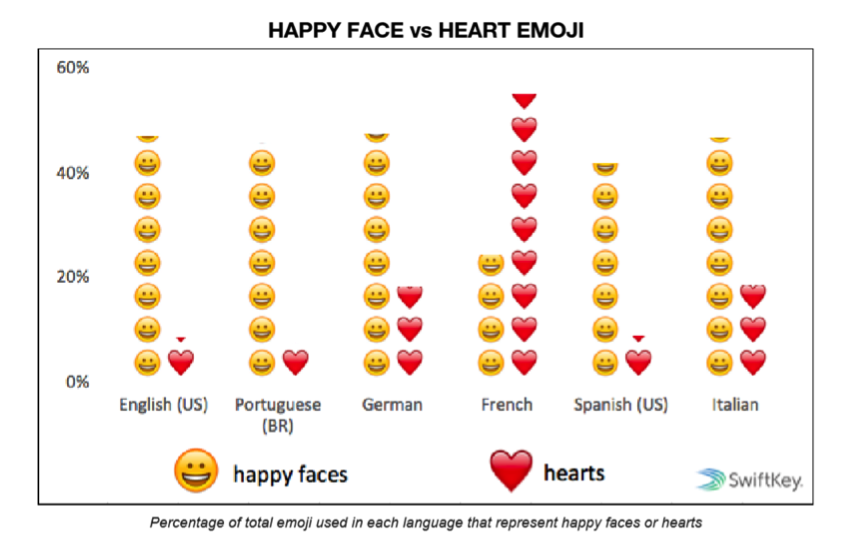

世界各国使用整体频次
我们按照地理编码，计算了所有包含emoji符号的推文的百分比，由此来量化emoji符号在各国的流行程度。这利于消除Twitter在各国流行程度不同所带来的影响。

计算Twitter上emoji符号的总体使用数量也是探索各国表情包使用偏好的好办法。以十个不同类型的国家为例，他们常用的表情包前十位也存在很多差距。

这只是各国emoji使用频率top10的差异。事实上，不少国家对其他高频表情包的使用偏好甚至颠覆了人们的传统认知。
数据显示，加拿大人最爱传送关于枪支暴力和金钱的表情符号，这些本来都被认为是美国人最热爱的东西却在emoji的世界里被加拿大人统统抢了过去。另外，他们也是最爱发“poop” 的英语语系国家。
类似地，与很多人的认识相背离的是，最喜欢“药”的竟然不是美国而是澳大利亚。“药”的世界平均使用率是11%。美国的平均使用率是10.2%，略低于世界均值。而澳大利亚的平均使用率竟然达到了17%，比世界均值多65%。
既然如此，美国人更喜欢怎样的emoji表情包呢？
事实上，很令人崩溃的是，即使分析了10亿个表情符号的使用数据，也没有人能知道美国人到底最爱使用什么。因为他们很博爱，什么emoji都喜欢，而这些喜好又都不属于一类，从鸡腿到茄子，什么都有。
让我们来看看不专一的美国人都在什么领域引领了风骚：
那么，刚捧起大力神杯的法国又有怎样的emoji使用偏好呢？
法国不愧是浪漫的象征，💗的使用频率竟然是世界均值的4倍、美国的7倍多，达到了55%！这让“💗”位列法国emoji使用频率的榜首，相较于其他各国均以“😂”为榜首的使用习惯，法国成为了世界独一份。
最后留个悬念，您认为哪国人最爱发“睡觉”这个表情包呢？